Week 26 · June–July 2026 · Current
OPEX Weekly Update
Operational Excellence — Digital & Process Initiatives
Database Analysis & Query Development
MES Database Study — SQL Queries Built for Yield, TRC, USN & I/O
Went through the MES database in detail this week — mapping how production data is structured across the different staging tables, understanding which fields get populated at each step of the line, and working out how the records link together across stations.
From there, SQL queries were developed, tested, and verified for four core metrics: Yield (pass count over total input), TRC Defects (defect records logged through the Test and Repair Centre), USN (Unit Serial Number traceability counts), and Input/Output calculations per production stage. Each query was verified against the live MES data to make sure the numbers coming back matched what the line team already knew from their manual counts — a few small discrepancies were found and corrected by adjusting how the stage boundary filters were applied.
Verified
From there, SQL queries were developed, tested, and verified for four core metrics: Yield (pass count over total input), TRC Defects (defect records logged through the Test and Repair Centre), USN (Unit Serial Number traceability counts), and Input/Output calculations per production stage. Each query was verified against the live MES data to make sure the numbers coming back matched what the line team already knew from their manual counts — a few small discrepancies were found and corrected by adjusting how the stage boundary filters were applied.
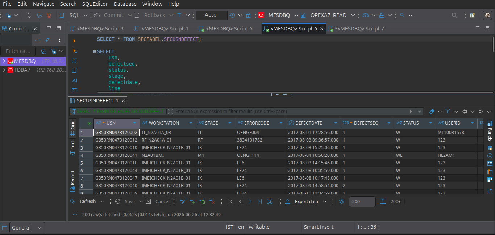
SQL Query Development
Production Dashboard Development
Dynamic FATP Production Dashboard — Live Metrics with Auto-Refresh
Built a production dashboard that pulls from the verified MES queries and surfaces the key metrics in one place. The dashboard supports Line and Date filters, so a supervisor can narrow the view to a specific FATP line or shift date without the full dataset loading every time.
Metrics displayed: Yield, USN, Input, Output, TRC Defects, Hourly Yield, and Hourly USN trends, alongside Line Team details and attendance for that line, and real-time Temperature & Humidity values pulled from the ESP32/MQTT pipeline. The dashboard auto-refreshes every 5 seconds so the production data stays live without needing a manual page reload.
Deployed
Metrics displayed: Yield, USN, Input, Output, TRC Defects, Hourly Yield, and Hourly USN trends, alongside Line Team details and attendance for that line, and real-time Temperature & Humidity values pulled from the ESP32/MQTT pipeline. The dashboard auto-refreshes every 5 seconds so the production data stays live without needing a manual page reload.
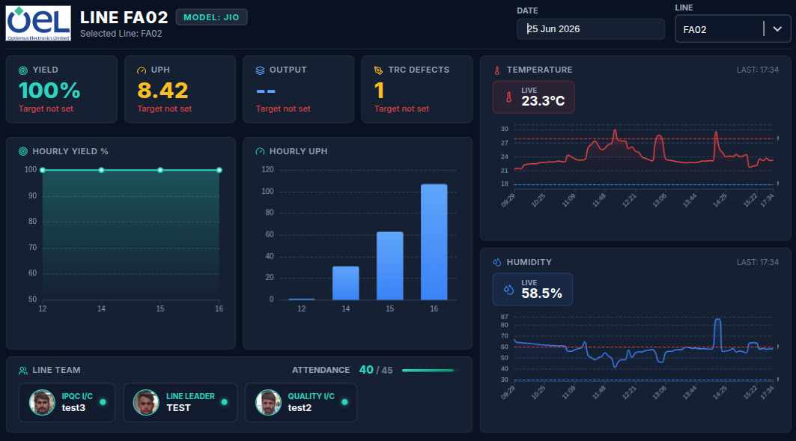
FATP Production Dashboard
Admin Portal Development
Complete Admin Panel — Production Targets, Line Team & Sensor Config
Built a complete admin portal to sit alongside the production dashboard, covering three main areas. Production targets can be set per line, so the dashboard's yield view knows what it's measuring against. Line Team management lets admins add, edit, or remove team members for each line, upload and crop team photos, and keep the line team display card current without touching the code. Each production line can also independently configure its own Temperature and Humidity alert thresholds, so the environmental monitoring parameters make sense for each line's specific process requirements rather than using a blanket setting.
Built
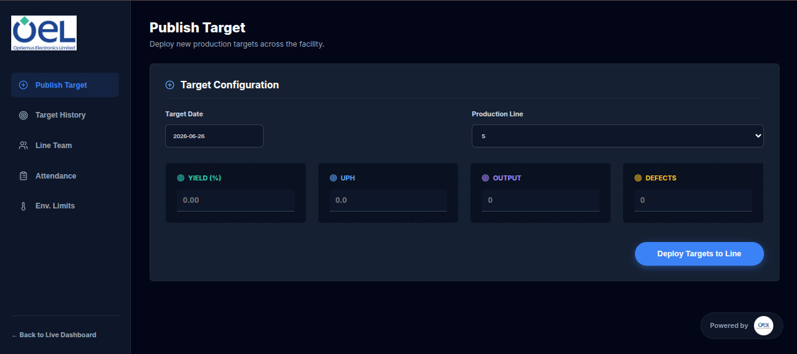
Admin Portal
Manpower Visibility Dashboard Enhancements
Daily HC Matrix — Developed in Coordination with PPC Team
A Daily Headcount Matrix has been developed in coordination with the PPC team, giving a day-wise structured view of headcount availability against planned targets across lines. The matrix helps PPC and production planning align on manpower at the start of each shift, and surfaces gaps early enough to act on them before they affect output.
Deployed
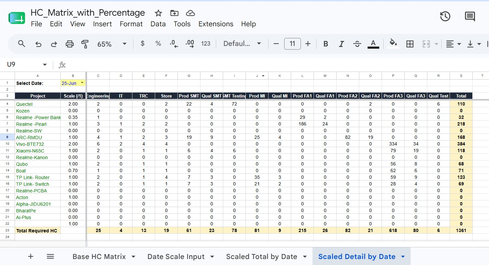
Daily HC Matrix
Male : Female Ratio Now Visible Across the Dashboard
Gender ratio visibility has been added across the dashboard — Male:Female split is now displayed as part of the headcount breakdown on the relevant views, giving HR and operations a quick read on workforce composition at a glance. This ties into broader traceability requirements around workforce metrics and makes it easier to spot distribution imbalances across departments or lines.
Added
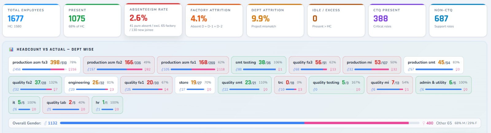
M:F Ratio Visibility
Environment Monitoring System
Backend Deployed on Render — 24/7 Uptime & Continuous Data Collection
The backend server for the environmental monitoring system has been deployed on the Render cloud platform, taking it off the local machine and ensuring it stays up continuously — no more dependency on a specific laptop or local network for the data collection pipeline to keep running. The server is handling MQTT message intake from the FATP line sensors, writing timestamped records to MongoDB, and serving data to the frontend on a persistent connection.
Deployed
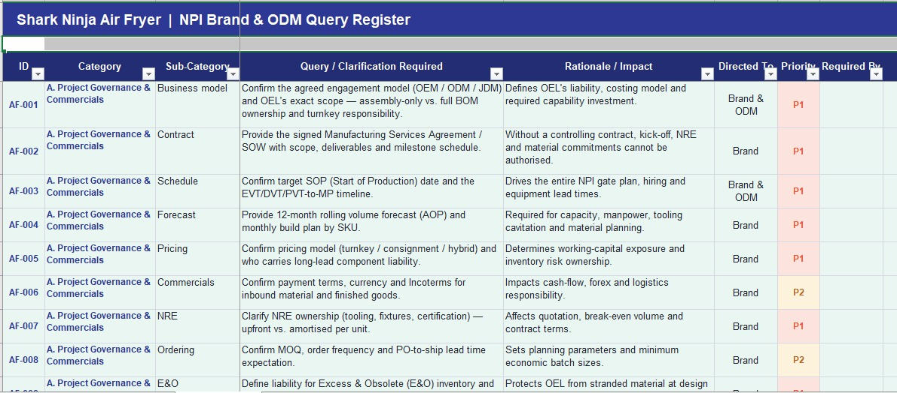
Render Cloud Deployment
Frontend Deployed on Netlify — Accessible from Any Device & Location
The monitoring dashboard frontend has been deployed on Netlify, making it accessible from any browser on any device without needing a local setup or VPN into the factory network. This includes the live temperature/humidity display, historical data charts, date-wise data lookback (stored in MongoDB), configurable threshold alerts that flag out-of-range readings, and a CSV export function for pulling date-range data offline.
Live
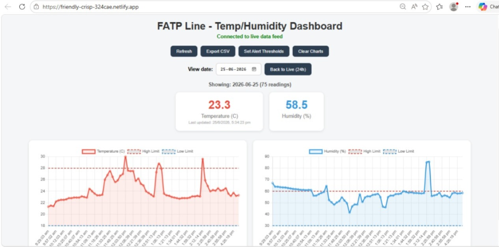
Netlify Frontend Live
T&H Dashboard Merged into Main FATP Monitoring Dashboard
The temperature and humidity monitoring view has been integrated and merged into the main FATP production dashboard, so the team no longer needs to switch between two separate tools to get the full picture of line conditions. Environmental data now sits alongside the production metrics — Yield, USN, TRC Defects — in a unified view, making it easier to spot correlations between floor conditions and production performance.
Integrated
PM2.5 / PM10 Dust Particle Sensor — Researched & Ordered
Carried out research on adding dust particle count monitoring to the FATP line environmental setup. PM2.5 and PM10 particle levels are relevant for FATP because solder flux fumes and PCB dust can build up on the floor, and having a reading gives a basis for air quality alerts alongside the existing temperature and humidity data. The new dust particle sensor has been ordered — integration and deployment are planned for the upcoming week.
Ordered
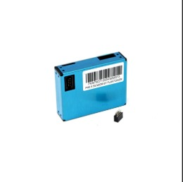
PM2.5/PM10 Research
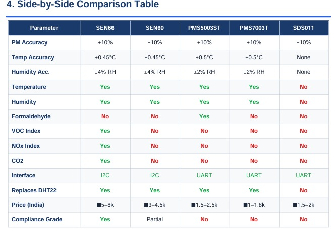
Sensor Ordered
Intelligent Operations Initiative
AI Analytics in Daily Reports — Shark Ninja Milestone Automation
Started applying AI-assisted analytics to daily reporting formats. The first application was on the Shark Ninja Milestone tracking file — rather than manually scanning through the full milestone list to identify what's overdue or approaching deadline, an automated summary is now generated that surfaces the top 10 nearest-to-deadline tasks and calculates an overall Readiness Summary as a percentage. This gives the team a fast read on project health without opening the full tracker.
Applied
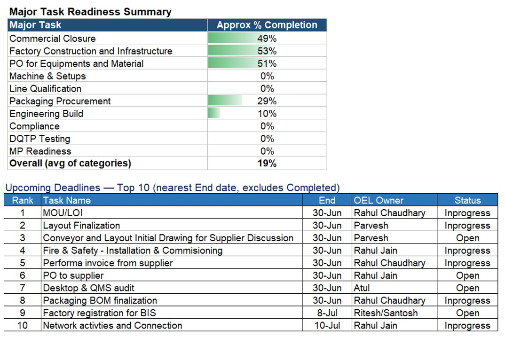
AI Milestone Analytics
AI Rendering — Layout & Conveyor Design Preview from Limited Input
Used AI image rendering to generate a concept preview of a production line layout and conveyor design, working from limited input information — floor dimensions, rough line configuration, and conveyor type. This gives the team a visual reference to review and react to before any formal CAD work is started, and works as a quick alignment tool during early-stage discussions where not all parameters are locked down yet.
Generated
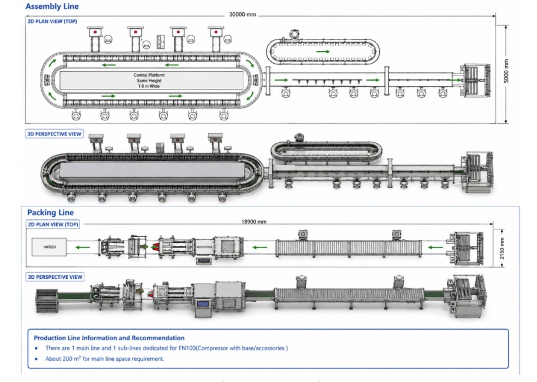
Concept Layout A
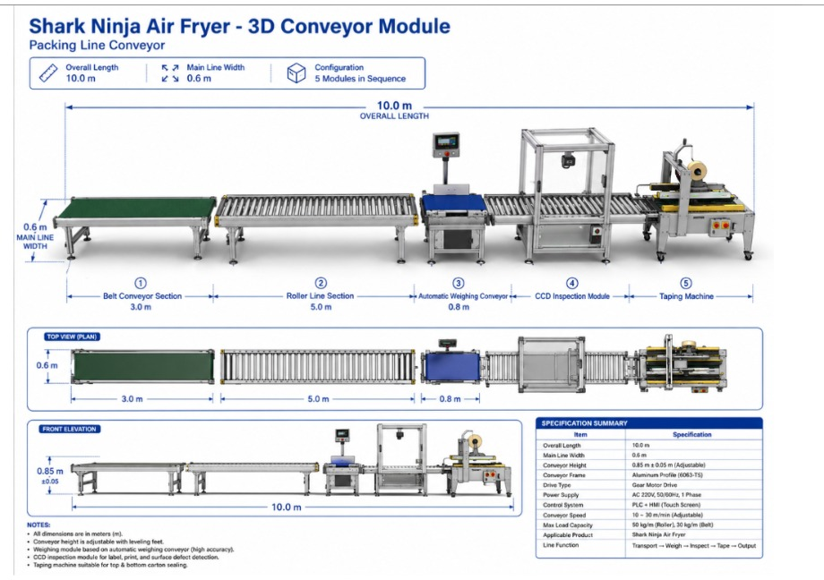
Concept Layout B
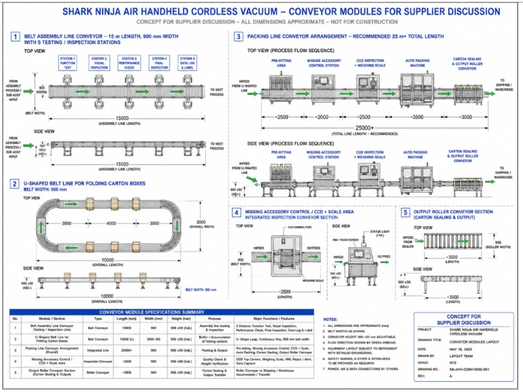
Conveyor Design
AI-Assisted Query Register — Faster Turnaround via Structured Prompting
Applied structured AI prompting to the task of building a Query Register, inputting the actual project-specific information required rather than using generic prompts, and getting a properly formatted register back in a fraction of the time it would have taken manually. This is a practical example of using AI as a work acceleration tool on documentation tasks — the output still needs review and sign-off, but the drafting effort drops significantly.
Applied
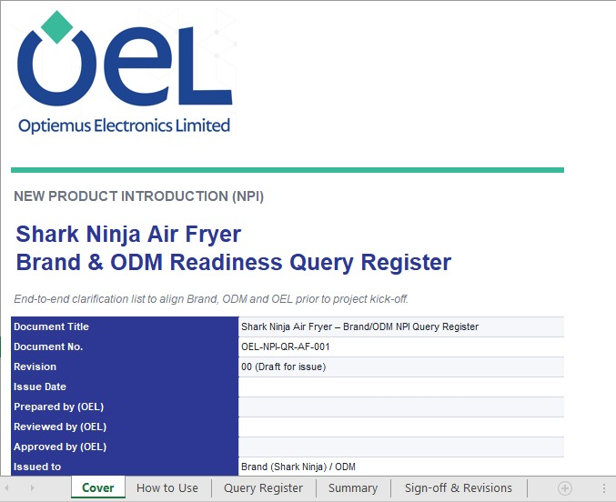
Query Register — Draft
Query Register — Output
WH → IQC Process Integration Study
The Warehouse to IQC process study continued this week, building on the earlier access escalation with Devendra Sir. The core problem identified is that supplier QR codes arrive in inconsistent formats, while the MES application expects a fixed, validated format for MPN, Part Code, and associated fields — the mismatch forces the Store team into manual data entry by reading the printed values above the barcode, which are small, hard to read under factory lighting, and frequently differ only in the last two characters for alternate part codes.
The risk profile here is straightforward: a small transcription error in an alternate part code can pass through unnoticed at entry but surface as a mismatch or a defect later in the IQC or production flow. The current study is focused on mapping the exact field validation rules inside the MES application, understanding how the QR parsing works, and building the case for either a QR standardization approach at the supplier end or an automated parsing/translation layer that bridges supplier format to MES format before the data ever touches the entry screen.
MES application access was confirmed and the location provided. Hands-on study of the data entry screens, field validations, and alternate part code handling is now underway.
In Progress
The risk profile here is straightforward: a small transcription error in an alternate part code can pass through unnoticed at entry but surface as a mismatch or a defect later in the IQC or production flow. The current study is focused on mapping the exact field validation rules inside the MES application, understanding how the QR parsing works, and building the case for either a QR standardization approach at the supplier end or an automated parsing/translation layer that bridges supplier format to MES format before the data ever touches the entry screen.
MES application access was confirmed and the location provided. Hands-on study of the data entry screens, field validations, and alternate part code handling is now underway.